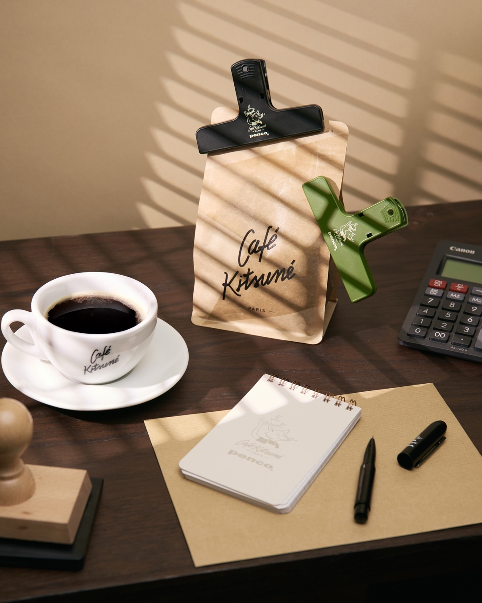
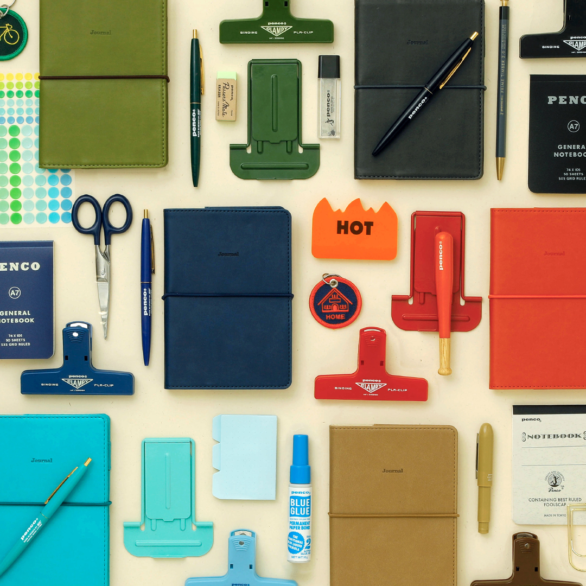
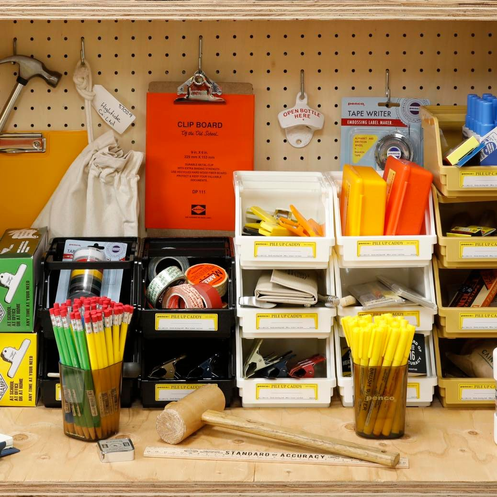
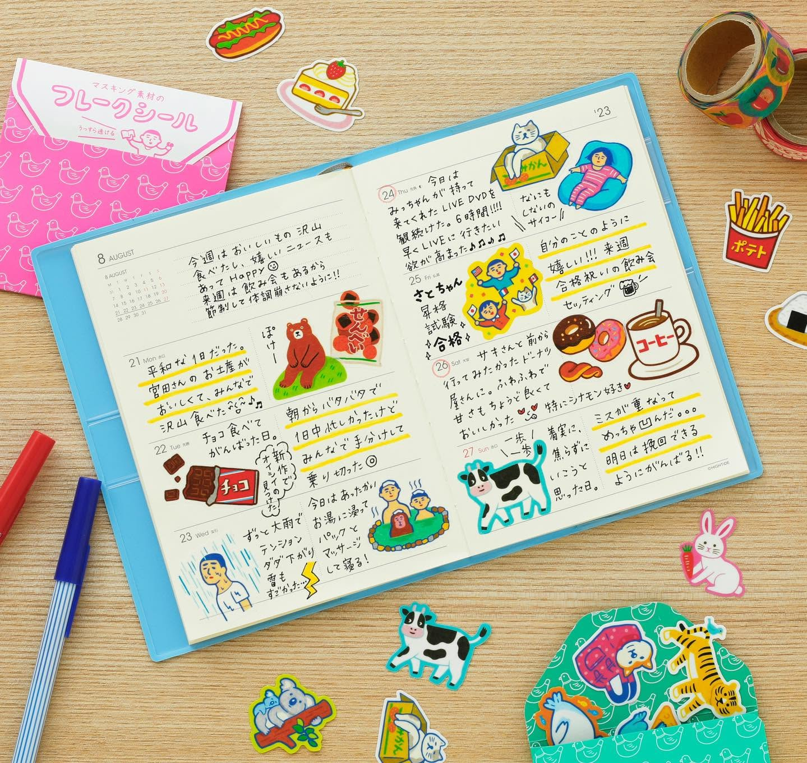
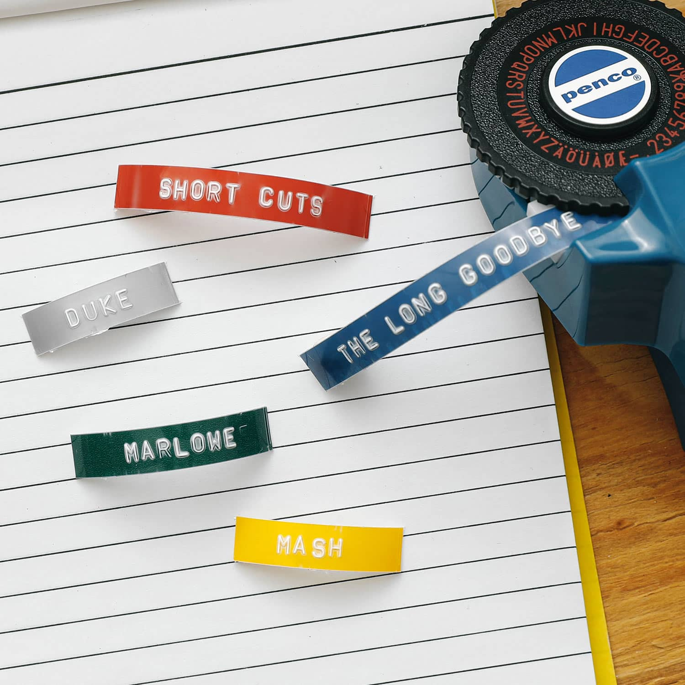
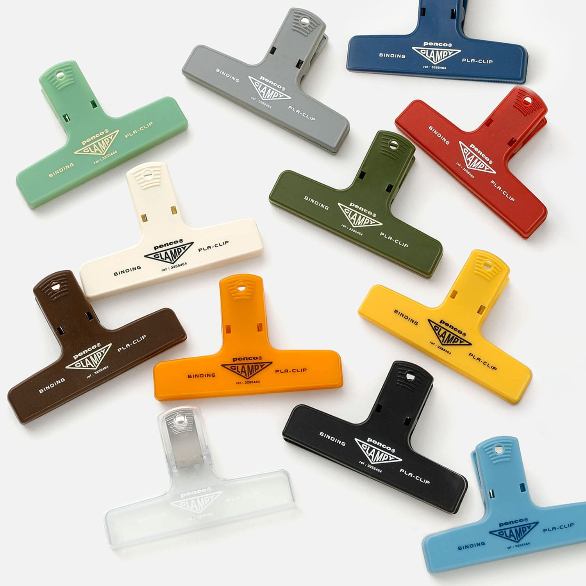
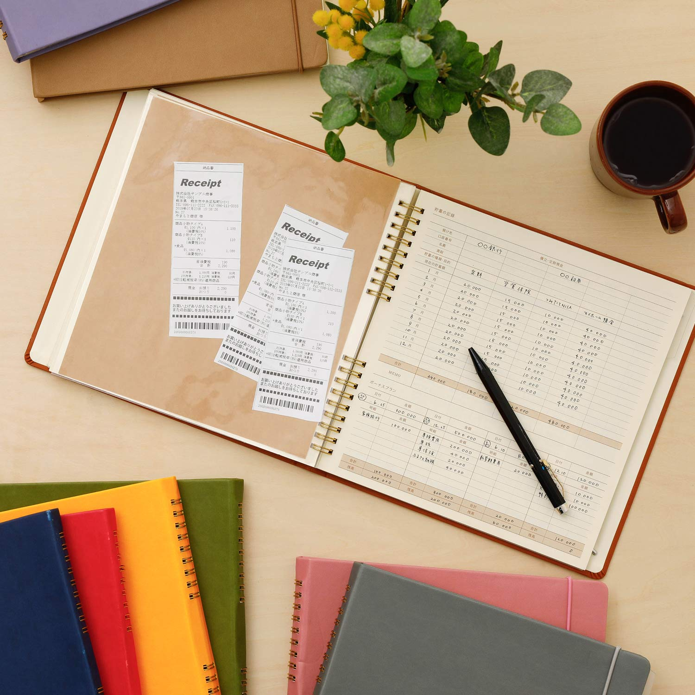

我们每天都会使用很多东西。
一支笔。
一个文件夹。
一本日历。
一个收纳盒。
一个钥匙圈。
它们通常只是生活中的工具。
用完，就放回原来的位置。
我们很少会想：
一个每天都会用到的东西，为什么不能让人开心一点？
HIGHTIDE 是一个来自日本的生活方式与文具品牌。
它从文具、日历、收纳用品到各种生活杂货，将实用性与设计感放在一起。
它并没有试图把每一件东西做得特别复杂。
相反，它更喜欢从熟悉的物品出发，
加入一点复古、一点玩心，
让原本普通的东西，
重新变得值得注意。
HIGHTIDE 这个名字来自 high tide——满潮。
它所带来的意象，也很像这个品牌想留在日常里的感觉：
不是特别强烈的快乐，而是一种慢慢被填满的满足感。
而这似乎也是它一直想做的事情：
让日常生活里的小东西，也能够带来一点满足感。

A Little More Joy in Everyday Life
我们总是在寻找能够提高效率的东西。
更好的笔。
更方便的收纳。
更合适的 planner。
更大的桌面。
但有时候，
一个东西存在的意义，
并不只是让事情变得更有效率。
它也可以让我们 稍微喜欢一下正在做的事情。
HIGHTIDE 的设计让我想到，
生活不一定需要发生什么特别的事情，才值得开心。
也许只是今天整理桌面的时候，看见自己喜欢的收纳盒。
打开 planner 的时候，看到熟悉的字体和版面。
拿起一支笔的时候，觉得它握起来刚刚好。
这些都是小事。
却会让普通的一天，
多一点属于自己的感觉。
Useful, But Never Boring
HIGHTIDE 最吸引我的地方之一，
是它并没有把「实用」和「有趣」看成两件互相冲突的事情。
一个 planner，首先需要让人能够清楚地安排时间。
一个文件夹，需要真的能够收好东西。
一个收纳用品，需要解决生活里的小问题。
但在这些功能之外，HIGHTIDE 又加入了一点自己的个性。
例如一些产品会使用复古的字体、颜色和材质，让原本熟悉的办公用品，看起来有一点不一样。
这种设计并不是为了制造复杂的视觉效果。
而是：
先让东西好用，再让它变得有趣。
我特别喜欢这种思路。
因为真正每天都会使用的东西，并不需要一直吸引我们的注意力。
它只需要在使用的时候，让我们觉得：
「这个东西真不错。」
一个很好的例子，是 HIGHTIDE 的 Planner
HIGHTIDE 的 planner 并没有加入大量复杂的装饰。
它的设计相当克制。
月份与星期的排列清晰，字体细小，页面保留了足够的空间。
有些文字和线条甚至使用较浅的灰色， 不会抢走手写内容的注意力。
这样的设计让我觉得很有意思。
因为 planner 本身并没有试图成为页面的主角。
它只是把空间留给使用者。
使用者真正写下的计划、 待办事项和生活记录， 才是页面最后留下来的东西。
而一些细节，例如月份索引、 不同用途的记录区域， 也让一本尺寸不大的 planner 依然拥有很好的实用性。
好的设计，有时候不是增加更多东西， 而是知道什么应该留下。

有使用者甚至喜欢把 HIGHTIDE 的 notebook 当成一本“不需要小心保护的笔记本”—— 可以带去旅行，也可以带到户外使用， 不必担心它始终保持完美。
A Little Nostalgia
HIGHTIDE 的另一种魅力， 来自它身上的一点怀旧感。
很多设计会让人联想到：
旧时代的办公用品、 复古工业设计，以及日本生活杂货。
它没有追求一种非常「未来」的感觉。
反而经常从过去已经存在过的视觉语言中寻找灵感。
熟悉的字体。
复古的颜色。
简单的金属。
纸张。
布料。
塑料。
这些东西本来都很普通。
但经过重新设计之后， 会让人产生一种：
「好像在哪里见过。」
的感觉。
也许是在小时候去过的文具店。
也许是在旧书店里看到的办公用品。
也许只是某种说不上来的熟悉感。
我觉得这种怀旧并不是为了让产品看起来「老」。
而是让我们重新发现：
过去那些简单的东西，其实一直都很好看。
这也是 HIGHTIDE 很特别的一点。
它不会强迫你注意设计。
却会让你在使用很久以后， 突然发现：
「原来我一直都很喜欢这个。」

Make Ordinary Things Yours
HIGHTIDE 的很多东西， 并不需要被收藏起来。
它们真正有意义的方式， 是被使用。
放在桌上。
放进包里。
带去工作。
带去学校。
放在房间里。
陪你过一年。
甚至更久。
一支笔被用旧。
一个收纳盒慢慢装满属于你的东西。
一本 planner 写满一年。
一个钥匙圈跟着你去了很多地方。
这时候，
原本属于品牌的东西，
就会慢慢变成：
你的东西。
我很喜欢这种变化。
因为 Soft Archive 收藏的， 也从来不只是「刚买来的漂亮物品」。
真正值得留下来的， 往往是那些进入生活以后， 慢慢拥有故事的东西。
HIGHTIDE 让我想到：
一个物品最有趣的时刻， 也许不是刚买下来的那一天， 而是它开始真正融入进你的生活之后。

Why Soft Archive Collects It
有些东西并不会改变我们的生活。
但它们会让我们更喜欢正在过的生活。
一支喜欢的笔， 一个好用的收纳盒， 一本陪你走过一年的 planner——
它们都很普通。
可是当这些东西慢慢成为日常的一部分， 它们也会拥有属于自己的意义。
A Small Detail I Love
我很喜欢 HIGHTIDE 没有把“实用”做得太严肃。
一个 planner 可以很好用，
一个收纳盒可以很好看，
一件办公用品也可以带一点玩心。
它让我觉得， 认真生活和享受生活其实并不冲突。
我们可以把事情做好， 也可以让做这些事情的过程 稍微开心一点。

What Caught My Attention
- 官方摄影通常非常简洁， 不会使用过度复杂的布景。
- 产品经常与桌面、书本、笔等日常物件一起出现。
- 复古字体、材质与颜色， 让普通文具多了一点个性。
- 我很喜欢它没有把「可爱」做成主要目的， 而是在实用性之外加入一点玩心。
- HIGHTIDE 的产品从文具延伸到收纳、 生活杂货，让整个品牌更像一个完整的生活方式集合。
Signature Piece
PENCO Clampy Clip
一个原本只是用来夹东西的小物件， 却因为复古的造型和鲜明的视觉语言， 让普通的办公用品也变得有趣。
我喜欢它的地方并不是「它很可爱」， 而是它仍然是一件真正有用的东西。
它没有为了设计而牺牲功能， 而是让功能本身变得更值得喜欢。
HIGHTIDE 官方对 Clampy Clip 的介绍也强调了它的实际用途： 可以整理文件、夹住明信片，也可以作为食品袋或咖啡袋的封口夹。 它的设计来自 Penco 经典的夹板夹结构，同时保留了复古的视觉感。

Theme
Play | 玩心
Theme Color
Vintage Green
Archive Information
HIGHTIDE 于 1994 年在日本福冈成立， 最初从文具与日常生活用品出发， 之后逐渐发展为涵盖 stationery、interior 与 lifestyle goods 的品牌。
Who It's For
- 🖇️ 喜欢实用但不无聊的东西的人
- 📒 喜欢有复古感设计的人
- 🪴 喜欢整理自己空间的人
- 🎨 喜欢生活中带一点玩心的人
- ☀️ 喜欢发现日常小物的人
Soft Archive Note
生活并不总需要一些特别的事情。
有时候，只是一支喜欢的笔，
一个好用的收纳盒，
或者桌上一个让你看见就会开心的小东西。
它们没有改变生活，
却让普通的生活变得更值得喜欢。
也许所谓的生活方式，
并不是把日子过得多么特别，
而是在每天重复的事情里，
找到一些愿意让自己开心的小东西。

Sources
This archive is an independent editorial project by Soft Archive. Product names, trademarks and images belong to their respective owners. Soft Archive is not affiliated with HIGHTIDE.
Information in this collection is based primarily on HIGHTIDE's official website and the independent sources listed above. Soft Archive's reflections and interpretations are written separately as editorial observations.
More quiet things worth keeping.
Return to the archive and discover another ordinary thing, another small detail, another story.
Explore the Archive →